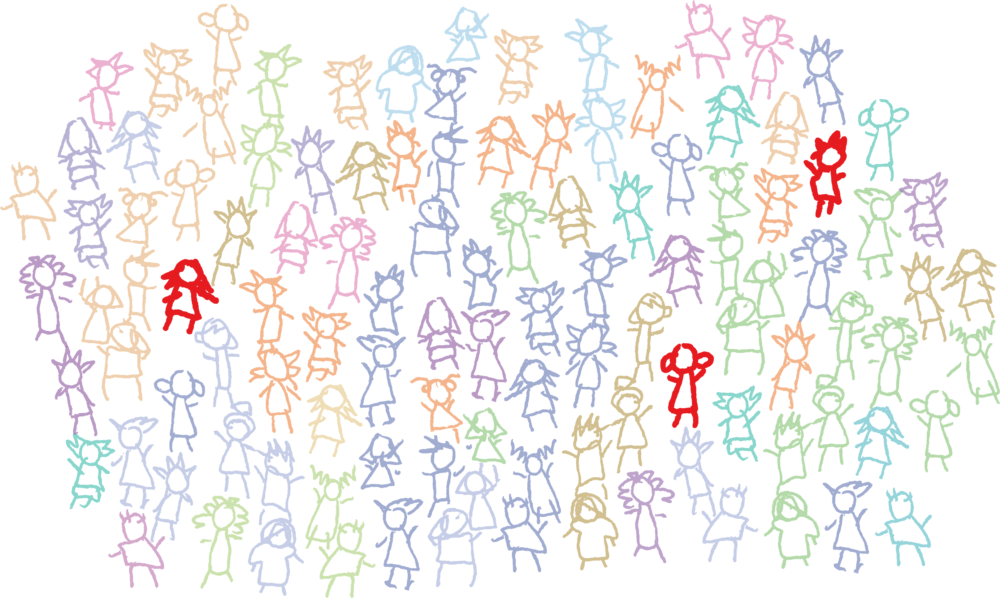
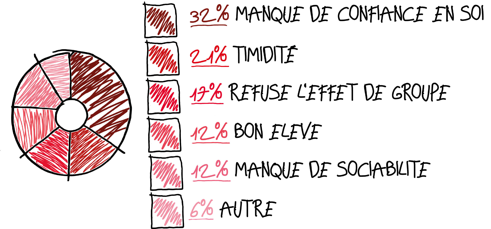

Le harcèlement scolaire dans les écoles primaire.
Salut moi c’est Herbert,
J’aime bien l’école et mes copains et jouer dans la cour de récréation. On joue a un jeu ou on designe un moche et il faut le taper et c’était moi le moche mais c’est qu’un jeu.
83% d’école en l’absence d’incidents grave, soit 10% avec 1 incident grave et 7% avec 2 incidents et plus violences milieux scolaire.
Aujourd’hui je suis passé a l’oral et les autres se sont moqués de moi, ça m’a fait mal, c’est toujours moi, j’ai plus trop envie de passer au tableau. Mais c’est que ça devais être drôle.
Le taux moyen d’incidents grave pour 100 élèves (en%) : 3% 2020 2021 violences milieu scolaire.
Sexe des enfants victime de multivictimation : Fille 41% Garçon 59%
Ca deviens vraiment plus drôle, j’ai mal a force de me faire frapper et me prendre des coups, mon amie m’a dit que c’est pas normal et que je devrais en parler aux professeurs. Mais c’est que j’ai pas envie qu’ils se fassent gronder, c’est mes amis.
Probèmes engendrer par la suite : 32% manque de confiance en soie 21% timidité 17% refuse l'effet de groupe 12% bon élève 12% manque de sociabilité 6% autres
Nature des incidents graves: 43% sont des violences verbales, 34% sont des violences physiques.
J’en ai marre je veux plus aller a l’école, les gens sont méchants mais c’est qe je suis obligé d’y aller, je suis triste, je repense a ce que m’a dis mon amie.
Sur 100 victimes d'incidents graves dans les écoles publiques, 27 sont des élèves ou un groupe d'élèves, auteurs: 24 élèves ou groupe d'élèves, 2 inconnus ou personnes exterieurs, 1 famille d'un élève.
J’ai craqué, j’en ai parler aux professeurs, et ca va mieux, j’aurai pas du avoir peur, finalement, j’aime bien l’école.